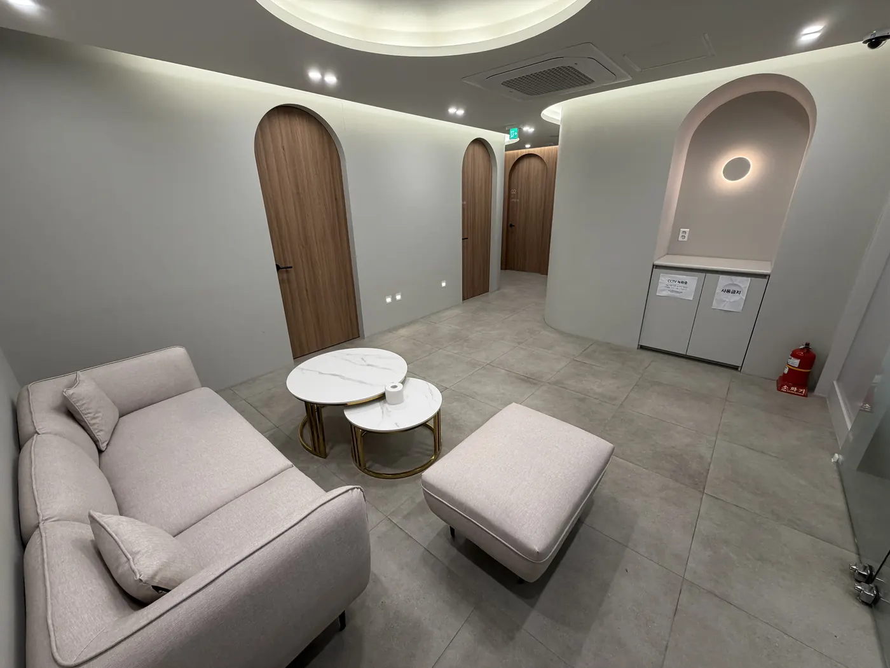
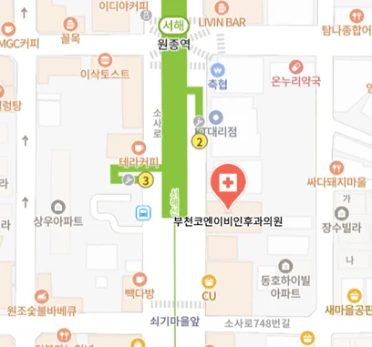

만성 피로·주간 졸림
자도 자도 피곤하고 낮에 졸음이 쏟아지는 분. 운전 중 졸음이 오는 분.
정확한 진단이 건강한 수면의 시작입니다. 최신 장비(웨인만 소나타)와 전문 의료진이 함께합니다.
시설 안내
부천코엔이비인후과는 환자분들의 편안한 검사를 위해 최상의 시설을 갖추고 있습니다.
검사 소개

수면다원검사는 코골이, 수면무호흡증, 불면증, 하지불안증후군 등 수면 질환을 진단하기 위해 잠자는 동안 발생하는 생체 신호를 실시간으로 기록하는 표준 검사입니다.
부천코엔이비인후과의 수면검사실은 1인 프라이빗 룸으로 운영되며, 센서 부착 후 평소처럼 주무시면 됩니다. 다음날 아침 일상으로 바로 복귀하실 수 있습니다.
검사 중 측정하는 생체 신호
이비인후과 전문의
CAREER
부천코엔이비인후과는 풍부한 임상 경험을 갖춘 이비인후과 전문의가 진료를 합니다. 단순한 검사 시행에 그치지 않고, 검사 결과를 바탕으로 코골이 수술, 양압기(CPAP) 처방, 구강 내 장치 등 환자 맞춤형 치료 계획까지 함께 수립합니다.
검사 대상
아래 증상 중 하나라도 해당된다면 수면다원검사를 통해 정확한 원인을 파악하세요.
자도 자도 피곤하고 낮에 졸음이 쏟아지는 분. 운전 중 졸음이 오는 분.
심한 코골이와 수면 중 숨을 멈추는 증상이 있는 분. 가족이 걱정하는 분.
잠결에 발을 차거나 이상 행동을 하는 분. 이갈이가 심한 분.
충분히 자는데도 아침에 두통이 있거나 입이 바짝 마르는 분.
검사 과정
부담 없이 하룻밤 주무시면 됩니다. 통증은 전혀 없습니다.
전문의 진료를 통해 증상을 파악하고, 수면 설문지를 작성합니다. 검사 일정을 예약합니다.
편안한 검사실에서 환복 후 비침습적 센서를 부착합니다. 통증은 전혀 없습니다.
평소처럼 편안하게 주무시면 됩니다. 수면 중 모든 생체 데이터가 자동 기록됩니다.
아침에 센서를 제거하고 퇴원합니다. 일상생활에 지장이 없습니다.
전문의가 데이터를 분석하여 진단 결과를 설명하고, 맞춤 치료 계획을 수립합니다.
비용 안내
의학적으로 필요한 경우 건강보험이 적용되어 합리적인 비용으로 검사가 가능합니다.
수면무호흡증, 렘수면장애 등이 의심되어 의학적으로 필요한 경우
검사비의 약 20%
환자 본인 부담금 수준
수면다원검사는 건강보험 적용 대상이므로 대부분의 실손의료보험에서 검사 비용을 보장합니다. 자세한 사항은 가입하신 보험의 보장 내역을 확인해 주세요.
수면다원검사는 건강보험 적용 시 본인부담금이 크게 줄어들며, 여기에 실손보험까지 청구하면 실제 환자 부담은 더욱 낮아질 수 있습니다. 실손보험 약관에 따라 환급금액이 달라질 수 있으므로 참고하시기 바랍니다.
정확한 비용은 보험 적용 여부에 따라 달라질 수 있습니다. 전화 상담을 통해 자세히 안내받으세요.(아래 수면 건강 전문 칼럼에 링크된 내용을 참고하셔도 좋습니다.)
자가진단
해당하는 항목을 체크하고 결과를 확인해 보세요.
자주 묻는 질문(FAQ)
수면 건강 정보
이비인후과 전문의가 작성한 수면 건강 정보를 확인하세요.
오시는 길
부천에서 수면다원검사 잘하는 병원을 찾으신다면 아래 지도를 클릭해주세요
